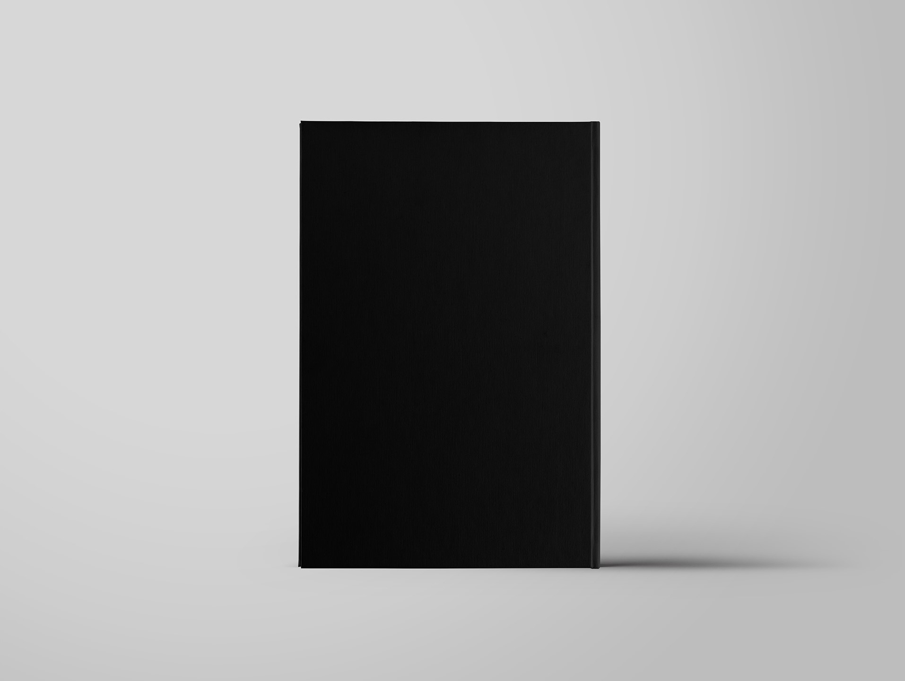

A la hora de la creación se tuvo muy presente la campaña de Loewe de 2019, en la que se realiza un símil entre las fotografías de formas vegetales de Blossfeldt y el cuerpo humano.
También se escogió como referente la obra de Israel Ariño "La gravetat del lloc", que tiene como eje central el ser humano y la vegetación en la oscuridad, resaltando las formas geométricas.